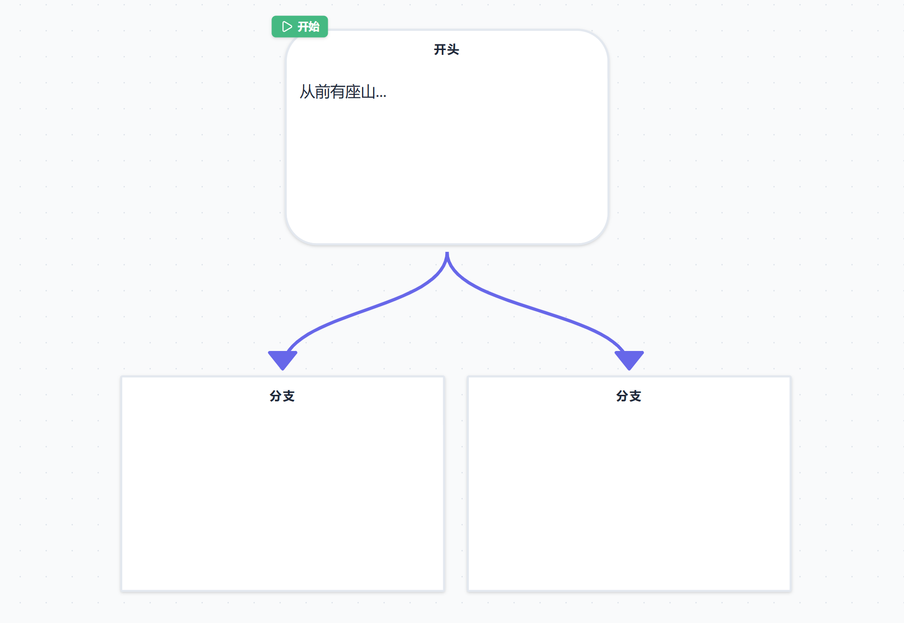
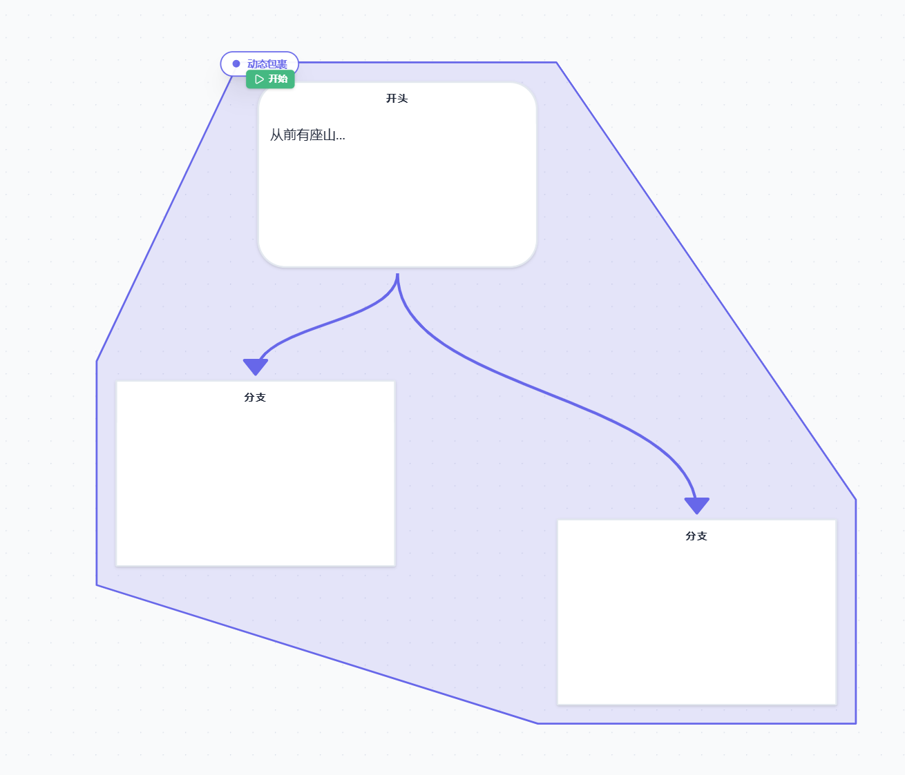
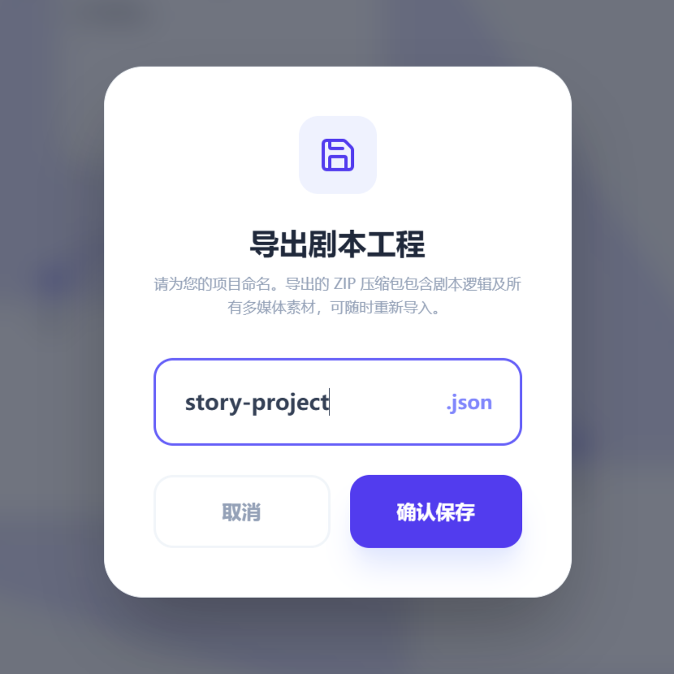
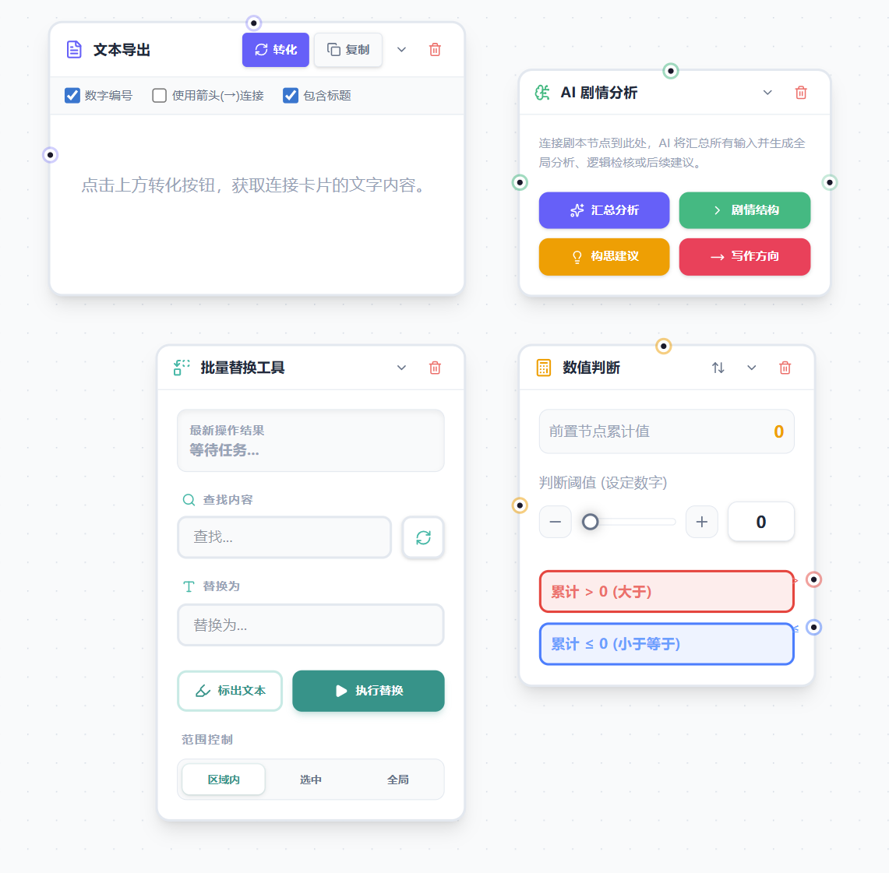
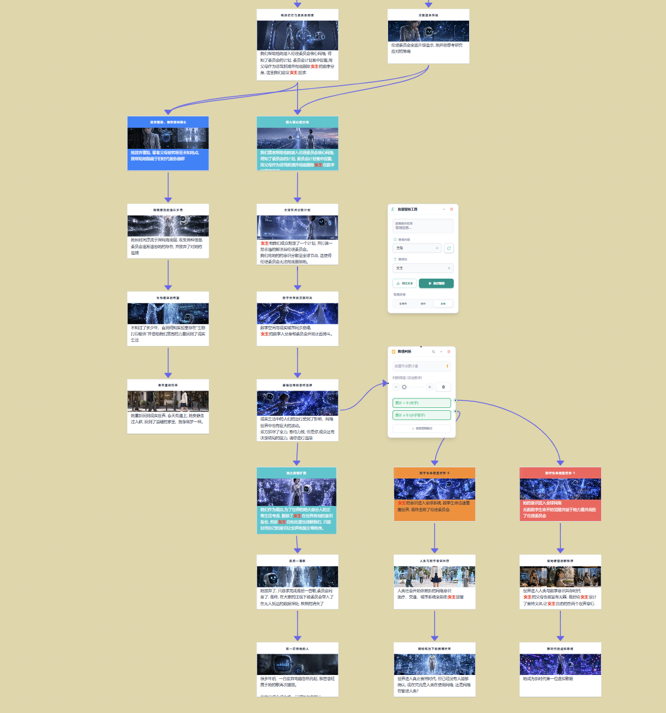

重塑您的交互式
剧本创作体验
GalWriter AI 是一款专为视觉小说和交互式剧本设计的专业编辑器。结合强大的 AI 赋能与直观的节点流设计，助您轻松编织宏大叙事。
注：桌面版下载时可能遭遇 Windows Defender 误报拦截，此为独立开发者程序未数字签名正常现象，请放心保留或添加信任。
全能的创作矩阵
化繁为简，每一个组件都为极致的创作心流而生，所见即所得
节点式逻辑引擎
无限画板与自由连线，让复杂的剧情分支与条件判定一目了然。

AI 深度共创节点
内置上下文感知引擎。提供顺延、发散、润色等定制化生成，与思路无缝对接。
动态包裹与收纳
使用包裹节点将剧情分支进行视觉分组，支持一键折叠，大型项目不再杂乱。

工程级一键导出
一键打包 JSON 剧本与多媒体素材，无缝对接主流游戏引擎与前端框架。

高阶批量工具
全局查找替换与纯文本聚合导出。释放后期校对工作量，让修改像写代码一样高效。

沉浸式实时测试
无需编译，即刻体验玩家视角。右侧还原画面，左侧记录时间线，掌控叙事节奏。

灵感不竭的
AI 创作大脑
深度集成 Gemini 与 DeepSeek 顶级大模型。一键唤起智能助手，从宏观结构分析到微观台词润色，打破创作瓶颈期的阻碍。
- 全局智库分析：连线多节点，自动提取逻辑脉络
- 深度思考模式：展示推理过程，AI 构思更透明
- 智能剧情插值：提供首尾节点，一键生成过渡桥段
前文顺延续写
自然延续当前剧情走向，精确保持人设与行文风格。
脑洞创意发散
提供截然不同的多个后续发展方向建议，激发新灵感。
场景/对话提纯
支持仅增加环境场景描写，或仅补充角色的台词互动。
极致润色重写
保留核心要素，修缮修辞手法，全面提升文本表现力。
极高自由度的定制化
从界面视觉到交互习惯，深度打磨您的专属工作流
视觉呈现
- 阶梯 / 贝塞尔连线无缝切换
- 全局标题显隐控制
- 迷你小地图实时导航辅助
- 故事线路径动态高亮
交互习惯
- 视频自动播放智能开关
- 节点底部多列按钮灵活布局
- 工具栏功能快速折叠自定义
- 剪贴板纯文本粘贴模式处理
系统配置
- 私密 API 密钥本地安全配置
- AI 生成文本长度自由调节
- 底座模型 token 消耗实时统计
- 跨平台 Tauri 原生桌面应用支持